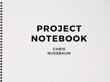
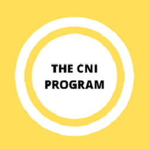
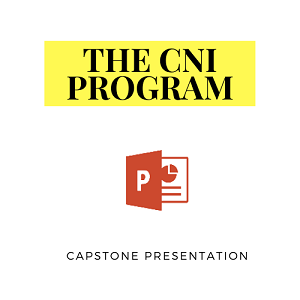

Capstone Project
Table of Contents
Objective
Project
Presentation
II.Project
Project Materials:
a. Project Notebook + Video
b. The CNI Program
c. Code Book + Video
d. The CN Network
III.Report
a. Introduction
b. Selection Process
c. Evolution & Objectives
d. Next Steps
e. Gatekeeping Theory
f. Citations
IV.Presentation
Capstone Talk + Slides
I. Rubric
Objective
Capstone serves as a “culminating experience,” a way to synthesize and demonstrate what you have learned in the Communication field during your time at PLU.
It is a guided exploration that takes you through asking good questions to research design to project scope to theoretical application to final product and presentation.
Be selfish with your time and energy. Choose a project you really want to do and take ownership of it. I am here to help facilitate that goal.
1. To scope a semester-length project or paper that demonstrates learning in Communication.
2. To demonstrate an ability to conduct research on a proposed topic.
3. To apply theory to application either through a project or research paper.
4. To evidence senior-level college writing in content, style, and format.
5. To present your work to an audience of experts and non-experts so it is understood.
Project
Broadly speaking, this is an opportunity to take knowledge and theory from the classroom and apply it to solve a problem, capitalize on an opportunity,
extend creative work you started in another class, and even connect with a field of interest for employment.
You may work in teams, if you choose, depending on the scope of work.
The project includes these items in order as listed:
1. Title of project.
2. Table of contents.
3. Project itself (plan, social media guide, media kit, mediation facilitation guide, etc.).
7-10 page reflection (report) on the process of creating the project:
a)Why did you select this project?
b)How did you use Communication theory to approach this project?
c)What are the goals of this project?
d)What are your next steps, if any?
Presentation
Throughout your time in Communication at PLU, you have been introduced to the standards of public speaking and given many opportunities to develop your skill.
The Capstone presentation is a final demonstration of competency -- how well have you learned to express yourself in this format.
If you are working as an individual (so this is likely most of you), you will deliver a 10-15 minute presentation on your project or paper.
If you are working in a small team, you will deliver a 15-20 minute presentation on your project. After your presentation either as individuals or in teams,
you should be prepared to take questions and comments from the audience.
Time:
10-15 minutes for individuals, 15-20 minutes for teams.
Medium:
Using your smart phone or other video recording equipment, please record your final Capstone presentation and upload it to the
PLU Communication Department channel by
Wednesday, May 20.
Audience:
Because we are in a distance learning environment, our department becomes our audience!
If you are safely in the company of others, you are welcome to have an audience from wherever you record your presentation.
Outline:
Speakers must speak from a 1-2 page extemporaneous outline.
There are some exceptions to the 1-2 page limit such as making the font larger or lengthy quotes from research sources.
Organization:
Your individual presentations should be organized. The speech should have an introduction, body, and conclusion (this should NOT be your name and topic statement).
Your introduction should have an attention getter, justification/link to the audience, thesis, and preview. The body has about 3 main points.
The conclusion includes a review and a statement of closure (that is NOT “thanks” or “any questions?”).
Content:
The content of the speech should be the support and evidence used to clarify, prove, and illustrate the claim of each main point. You need to incorporate and develop ethos, logos, and pathos.
You can certainly play audio or video clips, but they should not comprise more than 20% of your presentation time.
Delivery:
This speech should be practiced, professional, and polished. You are expected to use purposeful movement, gestures, eye contact, and facial expressions. You are expected to dress professionally.
You need to plan and practice your delivery, preparing and practicing in advance.
Auidence Responsibilities:
Each of you is responsible for evaluating 2 colleagues’ speeches.
II. Project
Project Materials
*CLICK ON IMAGE TO VIEW CONTENT*

The Project Notebook is a place where I brainstormed ideas for my capstone project. This notebook includes my capstone project idea called The CNI Program. Due to unprecedented circumstances involving the COVID-19 pandemic, I have been limited with this project and been forced to scale down. However, I still went ahead and made a blueprint for the eventual implimentation of this program which includes coding approaches, research on internet archives, databases and their functions, a handful of computer models, and other tools and frameworks neccessary to see this project through. I also included the psuedo code paramaters for the The CN Network- the website you are currently on. I encourage you to give the notebook a look to better understand my project and the content that will be discussed in the following sections.
In this video, I detail the contents of the Project Notebook through an interactive experience.
I give an in-depth explanation of the brainstorming that went on for my capstone project as well as The CN Network.

With the mentorship of Dr. Hoyt of the Communication Department and Dr. Renzhi of the Computer Science Department, and a few computer science students of Pacific Lutheran Univeristy,
I went on to create a blueprint for a program that I named the Credible News Identifier (CNI) in the Project Notebook and the Code Book (in the section below).
The goal of this project was to create a prototype of an api (application program interface) that would be able to distinguish real news from fake news using the guidelines provided by The Trust Project.
Through this program, I want to encourage credible local news and national news consumption. Secondly, I want to educate people on how to engage in media literacy through the usage of trust indicators.
Lastly, I hope this program will help people realize how machine learning can be used to tackle misinformation and "fake news".
To make this program a reality, I created a code book based off of the contents within the Project Notebook that would be used to "code" the program which software engineers, journalists,
and other contributors would use to fight off misinormation on media news sites. Along with the Project Notebook, the Code Book is an equally important piece to the development of the CNI Program.
Continue on to the next section to understand the signifigance of the Code Book.
*CLICK ON IMAGE TO VIEW CONTENT!*

I created the Code Book to better organize my thoughts and ideas for the blueprint of The CNI Program. The Code Book is based off of The Trust Project's "Core Trust Indicators and Editorial Attributes" table.
The Trust Project is an organization based in Southern California that fights off misinformation, pop filter bubbles, and has a goal to elevate trustworthy and ethically produced news.
Their transparency standards help newsrooms show how they are fulfilling journalism’s basic pledge: "to serve society with a truthful, intelligent and comprehensive account of events and ideas."
In this code book, there are a total of 9 tabs. There are eight core trust indicators and their attributes, and a "Byline Exemption" tab which are meant to offer transparency across multiple dimensions.
When you open up the code book you will see organized chaos- tables filled with colors, definitions, and other necessary components all intended to serve a specific purpose.
I made revisions, adjumstments and additions to the code book by accessing The Wayback Machine (an internet archive), the Markkula Center for Applied Ethics, and a table- Core Trust Indicators and Editorial Attributes.
Below, I will detail the complexities of this code book in the form of a video that will hopefully clear up any confusion when looking at it in depth.
Sources:
The Trust Project
Core Trust Indicators and Editorial Attributes
Markkula Center for Appied Ethics
The Wayback Machine
In this video, I detail the contents of the Code Book through an interactive experience.
I attempt to explain the intricacies of it by providing both concrete and visual examples.
You will come away with an increased understanding of the Code Book's role in the implimentation of the CNI Program api.
I developed this website so that I could present my capstone project virtually to my professors, classmates, friends, and family of Pacific Lutheran University in reaction to the COVID-19 pandemic. I also realized I could use this website to network for the long-term.
This website gives me a platform to put the culmination of all my work onto one place while making it accessible to everyone. It is also interactive in that it allows people to click on images, tabs, and social media to be further engaged with the content and to better know me.
The website was designed to be easy to navigate from tab to tab, and be aesthetically appealing to look at. To develop this website, I used programming languages HTML, CSS, and editing software Atom.
Sources:
The CN Network - Code / Github Repositories
III. Report
How Can AI Shape News Regulation?
Introduction
On December 9th, 1968, the first computer was invented. Like many computers of today, it operated by utilizing windows, menus and icons as an interface to its operating system. Many of the first computers capabilities were first demonstrated by Douglas Engelbart. Since then, people have gone on to imbue computers with artificial intelligence (AI). Artificial Intelligence is a studied field in computer science that emphasizes the creation of intelligent machines that mimic and simulate human thought and behavior. In AI, there is a subset called machine learning. Over the past 50 years machine learning has made extreme breakthroughs in the ways that society operates. It’s the reason why devices can recognize a person's voice, why photos of people can be recognized on Facebook, or why scientists can identify genetic mutations. Technology is rapidly evolving and changing the perceptions of what people view as normal. It’s so revolutionary that it has affected the way people communicate, share and interpret information- and the internet has given people a platform to influence the minds of many. One of the most apparent ways that machine learning and the internet has done this is news consumption.
Before the emergence of computers and AI, people got their news from print media. This media form was written and published by individuals who were experts in the field of journalism- the activity of writing for newspapers or magazines. As technology got more advanced, journalists would pass down their work to broadcasters- highly qualified personnel that were instructed to share specific news to the public by television and radio. Before people were able to publish news of their own to the web, print media and broadcast media were the two main ways of receiving news. Although the news may have been more accurate because it was more controlled by the government, people had no way of expressing their own opinions on controversial topics. As the computer became more advanced, people began exploring ways for masses of people to communicate with one another online. This was the beginning of social networks- a network of social interactions and personal relationships, and a structure involving people joined by a common interest.
In the 20th century, social media is the main method of networking. Having a social networking profile allows people to post anything and everything to the virtual world and can be seen by anybody. It gives people more exposure and chances for opportunities. Social media allows people to follow organizations and causes that they believe in, and express their first amendment to the fullest. But what happens when a person’s first amendment gets in the way of the truth? In the information age, social networking sites have become a notable vector for the spread of misinformation. On social media, misinformation can spread quickly to lots of people in comparison to traditional media because of the lack of regulation. This poses a question that takes into account the voice of the people, the role of machine learning, and attempts to tackle the issue of misinformation and propaganda. Fortunately machine learning is so advanced that artificial intelligence can shape the way that news is regulated.
Selection Process
At Pacific Lutheran University I took a course during January term. The course examined the phenomenon of "fake news" — and the misappropriation of that term — surrounding social media, disinformation campaigns, and the 2016 U.S. presidential election. Lectures, discussions, and workshops supported the objective of developing critical media literacy skills within the emerging media landscape. By the end of this course I had a better understanding of the history and contemporary state of the United States’ media landscape as well as the role the press played in democracy. I came away knowing how to identify and intervene in the spreading of misinformation and disinformation within various media environments. To demonstrate my understanding of the course, I wrote a reflection paper discussing what I learned and how I would put this knowledge to use in my own media consumption habits.
Prior to this course I wasn’t as informed on local / global news. However, while taking this course I realized how essential the accuracy of news was to people and how it can influence monumental decisions. Taking it a step further, it was apparent to me that the internet and social media were two driving forces to the spread of misinformation and disinformation. Following the impacts of Greta Thunberg on social media, I became inspired by her tenacity and determination in voicing the concerns of controversial political issues on the behalf of generation z individuals. Reading, watching, and hearing about the subtle positive changes that Greta was making on causes like climate change moved me. I wanted to get involved in the fight against fake news. Having experience in networking, marketing, communication, and computer science, I wanted to encapsulate everything I knew into a project that was both challenging and provoking.
During the “fake news” course, lectures about deepfakes and twitter bots were given. Deepfake technology uses neural networks to convincingly replace one face with another in videos and has potential for abuse. While deepfakes need a lot of computing power and data, they are relatively cheap to make. They make it possible to alter and skew the words of what people actually say by using layers of neurons, a virtual machine, lots of video footage and images, and video editing software. This kind of technology has potential to do a lot of harm and it is vital that people are aware of it. The misuse of bots on social media platforms was introduced in the course as well. Social media bots are a type of bot software that control accounts via application program interfaces. The bot software may perform actions such as liking, commenting, posting, and following other accounts. The purpose of bots is to interact with users in an automated way and without direct human input. Bots seem harmless but have the potential to spread misinformation given the appropriate api framework. Social media allows people to interact and share content with one another. Bots can be programmed to spread inaccurate content with audiences to drive traffic or attention to accounts, websites, services and other initiatives. Deepfakes and social media bots intrigued me with their influence in the spread of misinformation. As I was writing the reflection paper for the course, a rather captivating idea sparked: involving a twitter bot api, lots of data- examples of fake news / real news, and a set of guidelines to go off of- the trust indicators.
After jotting down the idea as an afterthought into the reflection paper and submitting the assignment, I got an email response from professor Hoyt suggesting I consider taking on the task of developing a twitter bot api as a capstone project. I emailed back immediately stating my approval and set up an appointment to discuss the next steps. During the preliminary meetings, a lot of research on machine learning, api’s, databases, trust indicators and other factors that would propel the project forward was conducted. Due to the vast amount of information that culminated, I thought the best way to organize my research and thoughts was to store them in a notebook that I eventually called the Project Notebook. Before much progress was made, me and professor Hoyt sought out a professor of PLU in the computer science department that could educate us on the correct tools and frameworks for the development of the twitter bot api.
During the meeting with professor Renzhi of the computer science department, I was informed on how I could expand my idea of a twitter bot api that could regulate news to something more versatile. He suggested that I create an api that could be incorporated into search engines like Google Chrome, Safari, and Firefox to seek out misinformation within news media sites. We discussed the scope of the project and made adjustments to make it feasible to complete given the timeframe. I had three months to develop the prototype of the api. It’s important to note that I do not not have the intent to develop an api for all eight trust indicators and their attributes for my project, but to create a blueprint for the eventual development of the api for when the resources and time was available. This meant a tremendous amount of researching, and involvement and cooperation of students and professors who wanted to make this api a tangible product. Before I proceeded with the development of the program, I had to give it a name. I decided to call it The CNI Program. The acronym CNI stands for credible news identifier as it’s purpose was to identify news perceived as credible. Using sources provided by the Trust Project organization, I took copious notes on how their organization developed transparency standards that helped people easily assess the quality and credibility of journalism. They formulated trust indicators based on interviews of people who told them what they valued in news and when they trust it. The organization didn’t want to necessarily weed out frauds, they wanted to show their approach to combating them. The executive Sally Lehrman, took research and invited the top news leaders around the world to build a digital standard that meets people’s needs: the trust indicators. I wanted to use the trust indicators to develop a machine learning model for the CNI Program api.
I was collecting a great deal of data and needed a space where I could visualize the processes of the CNI Program, I came up with a solution where I could most effectively organize the content with the use of excel spreadsheets. Excel spreadsheets gave me the tools necessary to create a code book for the CNI Program. The Code Book would allow me to establish the coding parameters necessary to develop the CNI Program api. Coding parameters included the trust indicators and their attributes paired with algorithms, concepts, methods and other criteria to identify the attributes within news media sites. Attributes are the transparency guidelines that The Trust Project require newsrooms to fulfill and are listed under each trust indicator. Examples of attributes include but are not limited to authors of a published story and their expertise, code of conduct policies of newsrooms, primary and secondary sources used to support story claims, type of news- analysis, opinion, etc., staff directory of newsroom representatives, and practices used in the ideation of stories.
Once the trust indicators and their attributes were identified and stored into the Code Book, I needed concrete examples found on the internet. I knew there was a subscription fee required to access news sites like CNN and New York Times, so I had to find a way to bypass the system. Utilizing internet web archives was the most practical approach. The main archive I used to pull examples of the attributes was through The Wayback Machine- an internet archive that took snapshots of 4.5 billion webpages and counting since the birth of the internet. After acquiring examples, I needed decoding approaches- methods to train the api to recognize patterns and know how to target specific attributes within an indicator. Decoding approaches include computing models and concepts required for the CNI Program api to accurately identify attributes given large quantities of data. Then I added three columns: the binary system, success rate of method, and passing rate (%) of api to better identify attributes given sets of data. The binary system is a system in which information can be expressed by combinations of the digits 0 and 1. The success rate of method informs software engineers and working groups whether an attribute can be identified. Lastly, the passing rate of the api is how accurately the api can identify attributes given large quantities of data- like if it were to identify that 60 of 70 sources had an ethics policy. By using this code book for the development of the api, I believe it could be used to regulate news sourced on the web more efficiently and lead to news that was trusted by the public. I developed The CNI Program api blueprint to encourage credible local news / national news consumption by educating people to engage in media literacy through the transparency guidelines of The Trust Project.
After the completion of the code book, I was ready to recruit students in the computer science department to code and develop the api prototype for the CNI Program. I began networking with students that had some expertise in the field of computer science, marketing, and communication fields. Quickly I set out to recruit a team of students and professors that I felt could give me differing perspectives in developing the CNI Program api. I reached out to a total of five to ten students and four professors that were all willing to help in some way. But then an unprecedented event shook the entire world -the COVID-19 pandemic- that forced businesses, universities and public places to mandate that people self-quarantine to protect and save the lives of millions of people. This halted the progress of my project for the time being, but facing adversity was nothing new to me no matter how discouraging the situation. Unfortunately I realized the development of the CNI Program api prototype was unattainable to do alone and recognized how difficult it would be to connect with all the individuals who were willing to participate in the construction of it, so I made ramifications. I had already created the blueprint for the api (Code Book) and had a place where I stored the processes (Project Notebook). I concluded that I needed a way to share my work to a lot of people. So I built a website.
Using programming languages html and css, and editing software Atom, I created a website for networking purposes and to showcase my capstone project to family, friends, colleagues and professors of Pacific Lutheran University. I went on to name the website The CN Network. Although it’s a place I decided to store my capstone project, it’s main purpose makes it possible for me to network with people and demonstrate my body of work. I included a total of three tabs on the website: home, portfolio, and capstone. The home tab gives an overview of the website. The portfolio tab includes my resume and a photo gallery to give employers and visitors a better idea of my character. Lastly, the capstone tab includes all the criteria required for the completion of the capstone project. I coded this website to challenge myself on a mental and creative standpoint. I illustrated creativity by making the website user-friendly and simple, interactive with clickable images that lead to content, social media buttons, explanar videos describing project content, and other media forms to give people the best possible website experience.
The state of the economy has stunted the progress of The CNI Program in terms of api development, receiving grant money, product marketing, and connecting with social networks to incorporate the api into web applications. Although there is a haze of uncertainty looming overhead during the COVID-19 pandemic, there is still time and resources that I will take advantage of as I move forward with the CNI Program. First, I will reach out to people interested in the coding of the api. These people will most likely include software engineers who understand how to apply computer models and concepts, data structures and data retrieval methods, generative adversarial networks, and a broad understanding on journalism and its role in news regulation. Then a tangible prototype of the api will be constructed that will only be able to perform retrieval operations of some attributes within the trust indicators. If successful, software engineers can continue expanding on the prototype to incorporate more trust indicator attributes into the api. Post-prototype, I will present a non disclosure agreement (NDA) to all personnel involved in the creation of The CNI Program to inform how confidential information and intellectual property is to be handled. In conjunction, an additional contract agreement detailing the allocation of money and patent credit will be distributed to all involved personnel. After the agreements have been finalized, collaboration with social networks like Google, Facebook, and The Trust Project will commence. Partnerships like these can pave the way to app development. The app will detail practices of journalism, objectives of The CNI Program and its content, and provide resources that will educate people on the importance of accurate news. Following the completion of The CNI Program api and the mobile app, I will continue to educate people about media literacy tactics and ways they can get involved in the regulation of news.
Stuff
* The Trust Project
*Core Trust Indicators and Editorial Attributes
* Markkula Center for Appied Ethics
* The Wayback Machine
* News media in the United States
* The Trust Project: Tech Companies Control The Flow Of News
* Can Google, Facebook weed out fake news with ‘trust indicators’?
* Evolution of Gatekeeping
* Gatekeeping in Journalism & Online
* What is Social Network Analysis?
* Neural Networks: Popular Types and Applications
* Understanding Generative Adversarial Networks (GANs)
* Understanding GANs
* Databases
* Conceptual Models
* Mental Models: The Best Way to Make Intelligent Decisions
* Data Modeling
* Logical Modeling
* Power Thesaurus
* Top Programming Languages on RapidAPI
* IBM data storage: Data-first infrastructure for hybrid multicloud
* How the hyperlink changed everything | Small Thing Big Idea, a TED series
IV. Presentation
Capstone Talk + Slides
The video above is just a placeholder for the time being til I upload the capstone talk video.
Sources:
PLU Communication Department YouTube Channel
*CLICK ON IMAGE TO VIEW CONTENT!*

The PowerPoint Presentation for my capstone project has no content in it as of now. If you want to test out the functionality of the PowerPoint, go right ahead.